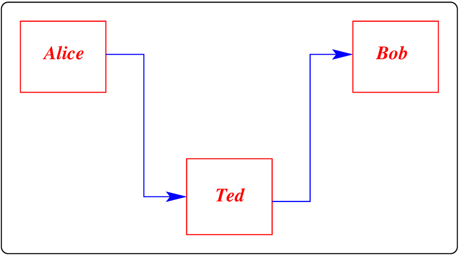
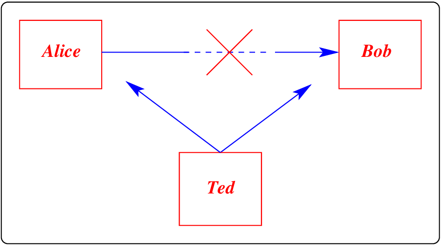
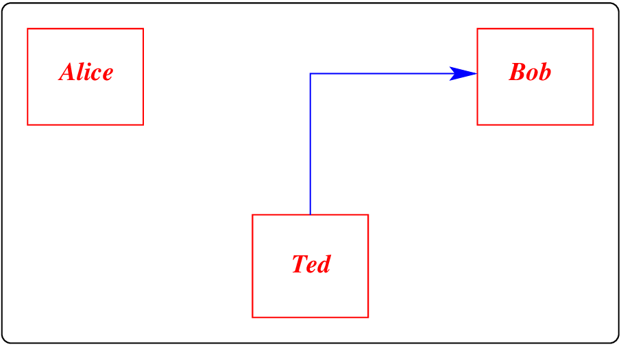
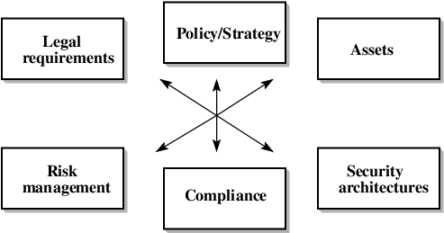

DADA2026:1
Defence against the Dark Arts
First topic - Introduction to IT security [H1]
May 9, 2026
Family ... ... and development ...

Isolation...

Information warfare [X,i5,i6]

Attacks per day on a newly created web server/site

A new website was put up using a previously unused IP address and name. After about 10 days, the site got discovered, and the attacks started, growing quickly until stabilizing at about 1000 attackers per day. Nowadays it takes about 5 hours.
Large scale warfare: theft [ctrl-i9]

The well-coordinated multi-country attack did succeed in stealing over US$80M. The suspected attackers have never been bought to justice, and the money was lost [ ACM/IEEE].
Consequences: Waikato District Health Board: #1 (2015)

In a small DHB building in NZ, the machines that controlled the gates in the car park were connected to the (internal) DHB network. These machines were running an old version of an operating system, and had not been updated in years. They were infected with the Conficker worm from a USB stick plugged in by a car-park technician. The worm propagated throughout the NZ DHB network.
Though the DHB network was only down for two days, the consequences were very personal, involving delays throughout NZ on medical records, operations and so on.
Structure: attack on open source software
 |
Relied on in Linux and the open source community (updates, the kernel, browsers etc). In February 2024, malicious code which allowed for remote execution of code was injected into at least two official distributions. Luckily, this was discovered accidentally in March 2024, and we will revisit this story when we look at Social Engineering. Note that this was a successful injection of malicious code in an “open source” project. |
xz-utils is an effective compression library used by much of the world - in browsers, operating systems and so on. It has been in use since 2009, with the source maintained by the open-source community since then. The successful attack last year is the first known attack directly on open-source software sources.
Complexity of issues: Exposing data...

During an outbreak of disease in Singapore years ago, my colleagues and I had to provide our temperature every day before we could come into work. We were assured it was private, but the data was published in a database, and by looking at two tables, unfortunately...
| Nationality: | Singaporean | PRC | Poland | German | Australian | NZ | .... |
|---|---|---|---|---|---|---|---|
| Today’s temperature: | 36.8 | 36.9 | 37.1 | 36.5 | 38.2 | 39.1 | .... |
| Number of staff: | 23 | 14 | 3 | 5 | 3 | 1 | .... |
By inference from the two database tables, you can deduce that Hugh’s temperature was too high!
Anderson’s book suggests a “framework” [ctrl-i7,ctrl-i8]

- policy:
-
what is allowed/disallowed. What you are supposed to do.
- mechanism:
-
ways of enforcing a policy. Ciphers, controls...
- assurance:
-
how much reliance you place on each mechanism.
- incentives:
-
motives of the people guarding and maintaining the system, and the attackers.
Using the framework: Hospital security

Consider patient record systems:
A mechanism might be that “Nurses can see the patient record for patients cared in their own department over the last 90 days”. However, this might be tricky to implement given that Nurses can move departments - the patient record system would become dependent on the hospital personnel system.
Record anonymizing for research can be tricky (remember the slide on database attacks).
There is an extreme requirement for accuracy of web based data (reference texts, drug side effects).
The CIA triad...

- confidentiality: concealing information - resources may only be accessed by authorized parties;
- integrity: trustworthiness of data - resources may only be modified by authorized parties in authorized ways;
- availability: preventing DOS/denial-of-service - resources are accessible in a timely manner.
Types of attacks
 |
 |
 |
 |
The diagrams above, of Interception, Modification, Interruption, and Fabrication, remind us of the routes taken.
Summary: the IT security landscape
|
 |
Unfortunately, the landscape is that of "Information warfare", but the good news is that there are a wide range of activities (and hence jobs): Information Security Engineer, IT Security Architect, IT Security Specialist, IT Security Analyst, Business Security Manager, Security Research (Technical)...
This session emphasized the scale of the issue, with hints as to how we can begin to address it.